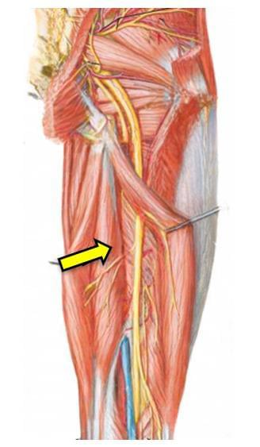

Quatro músculos da coxa se apresentam no guichê. Só um é o da foto.

DeclaraçãoO músculo indicado na figura a seguir é o
Comente a sua letra antes de arrastar.
Todo isquiotibial tem naturalidade (origem), domicílio (inserção) e nacionalidade (nervo). Três são parecidos. Um é estrangeiro.
Sinais particulares: superficial, ventre fusiforme e tendão longo e fino na metade distal da coxa.
Sinais particulares: profundo e medial, origem membranosa larga, ventre largo e achatado na metade distal.
Sinais particulares: nasce no lado lateral da coxa; o único isquiotibial com nacionalidade fibular.
Sinais particulares: lateral ao nervo isquiático, que corre entre os semis e o bíceps.
A foto mostra um ventre largo e achatado, medial ao isquiático e por baixo de outro músculo. Três candidatos não batem.
Superficial e de tendão fino. Tem tendão longo e cilíndrico e fica por cima do semimembranáceo, não por baixo.
Grupo lateral. Nasce na linha áspera, do lado lateral da coxa, e ainda tem nacionalidade fibular.
Também lateral. Fica do outro lado do nervo isquiático, lateral a ele, e desce até a cabeça da fíbula.
Ventre largo, profundo e medial: semimembranáceo.
A prova de anatomia do TEOT é assim: uma figura, uma seta e quatro nomes parecidos. Questões das provas oficiais, comentadas alternativa por alternativa, para treinar no tempo que sobra do plantão.
ortoquestoes.com.br
DeclaraçãoO músculo indicado na figura a seguir é o
Guarde a sua letra.
O carimbo sai no próximo story.
Semitendíneo: superficial, tendão longo e fino, fica por cima.
Cabeça curta do bíceps: linha áspera, lado lateral, divisão fibular.
Cabeça longa do bíceps: lateral ao nervo isquiático.
Ventre largo, profundo e medial: semimembranáceo. O semitendíneo fica "deitado" sobre ele.
Os quatro passaportes estão no feed de hoje.
Questões das provas oficiais, comentadas alternativa por alternativa, para treinar no tempo que sobra do plantão.
ortoquestoes.com.br